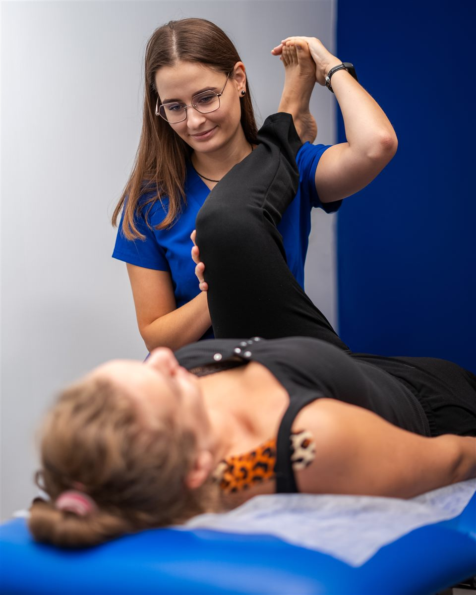

Fizjoterapia Ortopedyczna w Bydgoszczy
Profesjonalna fizjoterapia ortopedyczna w Bydgoszczy - leczenie bólu i dysfunkcji układu mięśniowo-szkieletowego, urazów, zwyrodnień i dyskopatii. Przywracam sprawność i prawidłową biomechanikę.
Specjalizuję się w terapii pacjentów z bólami kręgosłupa (odcinka szyjnego, piersiowego, lędźwiowego), dolegliwościami stawów obwodowych (bioder, kolan, barków, nadgarstków) oraz dysfunkcjami po przeciążeniach zawodowych i sportowych. Każdy plan terapii jest indywidualnie dopasowany do Twoich potrzeb.
Dowiedz się więcej